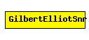

File: NetworkInterfaces/MF80211/phyLayer/snrEval/GilbertElliotSnr.ned
C++ definition: click here
Gilbert-Elliot signal-noise evaluator
This component has been taken over from Mobility Framework 1.0a5.
The following diagram shows usage relationships between modules, networks and channels. Unresolved module (and channel) types are missing from the diagram. Click here to see the full picture.
| Name | Type | Description |
|---|---|---|
| debug | bool | debug switch |
| transmitterPower | numeric | |
| bitrate | numeric | |
| headerLength | numeric const | |
| carrierFrequency | numeric | |
| thermalNoise | numeric | |
| pathLossAlpha | numeric | |
| sensitivity | numeric | |
| meanGood | numeric | |
| meanBad | numeric |
| Name | Direction | Description |
|---|---|---|
| uppergateIn | input | |
| uppergateOut | output | |
| radioIn | input | to receive AirFrames |
simple GilbertElliotSnr parameters: debug : bool, // debug switch transmitterPower : numeric, bitrate: numeric, headerLength: numeric const, carrierFrequency: numeric, thermalNoise: numeric, pathLossAlpha: numeric, sensitivity: numeric, meanGood: numeric, meanBad: numeric; gates: in: uppergateIn; out: uppergateOut; in: radioIn; // to receive AirFrames endsimple